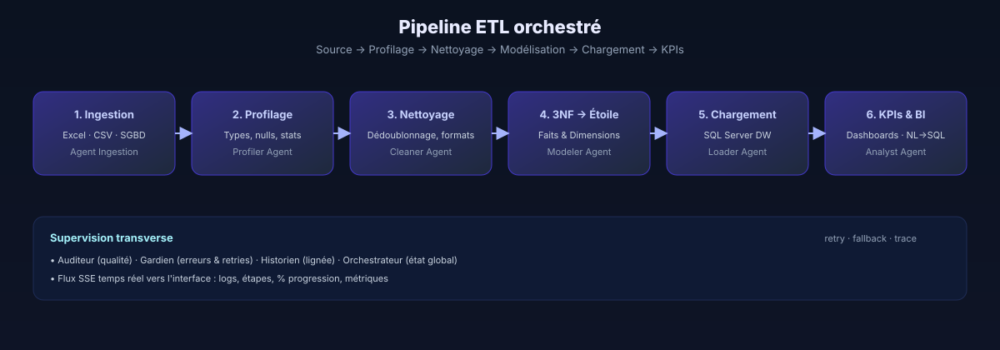

Guide de démarrage
Installation & démarrage
Lancez Agent BI sur votre poste en moins de cinq minutes. Nous décrivons deux chemins : local (Node + Python) pour le développement, et Docker pour une mise en route sans dépendances.
Pré-requis
- Node.js ≥ 18 (pour le front Vite/React)
- Python ≥ 3.10 (pour l'API FastAPI et les agents)
- SQL Server 2019+ (ou Azure SQL) — une base vide suffit ; Agent BI crée les objets nécessaires.
- Clé API Anthropic (Claude Sonnet 4.5) — indispensable pour les agents cognitifs.
- Optionnel : Docker 24+ et Docker Compose pour le chemin conteneurisé.
Pourquoi SQL Server ? Parce que le pilote
pyodbc + T-SQL offre une très bonne couverture des constructions dimensionnelles (MERGE, SCD Type 2, COLUMNSTORE). Le support d'autres SGBD est prévu via adaptateurs.1. Cloner et configurer
git clone https://github.com/votre-org/agent-bi.git
cd agent-bi
cp .env.example .env
# Éditez .env : clés API, credentials SQL Server, JWT_SECRET…Les variables essentielles :
| Variable | Rôle | Exemple |
|---|---|---|
ANTHROPIC_API_KEY | Clé Claude | sk-ant-… |
SQL_SERVER_HOST | Hôte SQL Server | localhost |
SQL_SERVER_DB | Base cible | AgentBI_DW |
JWT_SECRET | Signature des tokens | 32+ caractères aléatoires |
JWT_ISSUER | Émetteur logique | agent-bi |
2. Lancer en local
Backend
cd api
python -m venv .venv
source .venv/bin/activate # Windows : .venv\Scripts\activate
pip install -r requirements.txt
uvicorn main:app --reload --port 8000Frontend
cd ..
npm install
npm run dev # http://localhost:5173Astuce. Le dev-server Vite proxy automatiquement
/api et /docs vers le backend. Rien d'autre à configurer.3. Premier pipeline
- Ouvrez http://localhost:5173.
- Créez un compte (page de connexion) — l'app est toujours authentifiée.
- Cliquez sur Nouveau pipeline, sélectionnez une source (Excel démo inclus).
- Observez la console live : chaque agent s'annonce en temps réel via SSE.
- À la fin, le schéma en étoile s'affiche ; le dashboard est accessible dans l'onglet Analyse.

4. Chemin Docker (alternative)
docker compose --env-file .env.deploy up --buildDeux services sont lancés : api (FastAPI, port 8000) et web (Nginx servant le front, port 80). Le volume agentbi_uploads persiste les fichiers déposés par l'utilisateur.
5. Problèmes fréquents
Le pipeline n'avance pas. Vérifiez la console navigateur : un 401 indique un token JWT expiré ; un 500 sur
/api/start indique généralement un mauvais SQL_SERVER_HOST.Aucune source détectée. L'agent d'ingestion refuse les fichiers vides ou avec plus de 20 % de colonnes non typables. Nettoyez l'en-tête et réessayez.
Limite LLM atteinte. Si Claude rejette une requête pour quota, Agent BI bascule sur un plan dégradé : un schéma de secours est proposé et l'utilisateur peut relancer plus tard.